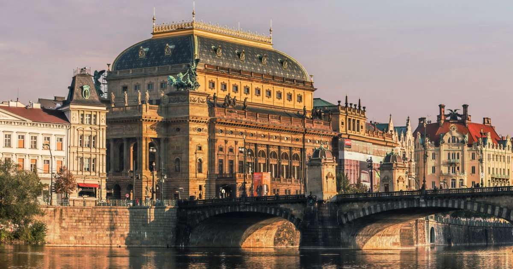

Prague has a renowned and active musical life, which reaches a high point each year in the internationally known spring music festival.
Theatrical traditions are also strong, with more than 20 well-attended theatres in the city. There are also many museums and galleries, and a Palace of Culture was completed in 1981
Perhaps the greatest treasures of the city, however, are the 2,000 officially recognized architectural and artistic monuments, ranging in period from the Romanesque through the Gothic to the Baroque, Rococo, Classical, and Neoclassical.